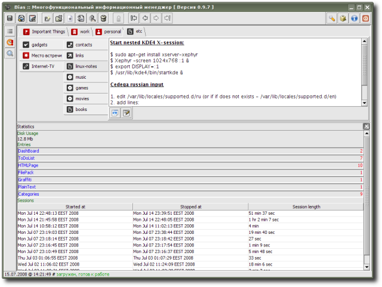

SimpleStats - tool to gather and represent statistics; gives information about application's workspace disk space usage, number of used categories and data entries (grouped by type) and application's working sessions (start time, shutdown time, and session length).
Extension is provided by R. Kasianenko, an author of Bias application.
Preview:
